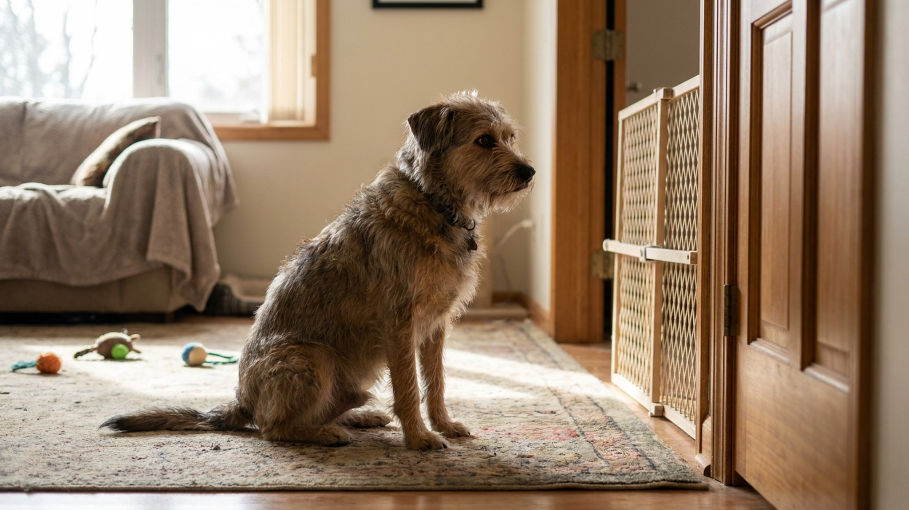

Знакомим кошку с собакой в одной квартире: 14-дневный план без драк и шипения

6 июня 2026 · 9 минут чтения · Поведение · Мультипиты · Кошки · Собаки
Большинство конфликтов между кошкой и собакой в доме — результат не несовместимости, а слишком быстрого знакомства. Когда хозяин просто приносит нового питомца и ждёт, что «сами разберутся», — разбираются плохо. Но если дать им 14 дней на правильный, постепенный ввод — шансы на мирное сосуществование резко вырастают. Вот конкретный план.
🐾 Спросите AI-ветеринара прямо сейчас
AnimaLife — приложение, где AI-ветеринар отвечает на вопросы о кошке или собаке 24/7. Бесплатно, без записи и очередей.
Открыть в Telegram → Открыть в MAX →
Почему кошка и собака конфликтуют
У кошки и собаки принципиально разный язык тела. То, что собака воспринимает как приглашение к игре (прыжок вперёд, виляние хвостом, наклон головы), кошка читает как нападение. Кошка, которая виляет хвостом — раздражена. Собака, которая виляет хвостом — рада. Одно и то же движение, противоположный смысл.
Цель знакомства — дать обоим питомцам время выучить язык друг друга в условиях, где нет угрозы. Это невозможно сделать за один день.
До встречи: подготовка пространства
Прежде чем два питомца окажутся в одной квартире, нужно создать правильную среду.
- Зона безопасности для кошки: комната или пространство, куда собака не попадёт. Там стоят миска, лоток, лежанка кошки. Это её «штаб».
- Высота: кошки чувствуют себя в безопасности наверху. Полки, шкафы, когтеточки с верхней площадкой — кошка должна иметь доступ к высоте везде в квартире.
- Разные зоны кормления: миски кошки и собаки никогда не стоят рядом, в идеале в разных комнатах.
- Лоток кошки: в месте, куда собака не достаёт. Это важно — собака, которая лезет к лотку, создаёт постоянный стресс для кошки.
Дни 1-3: только запах, без встречи
Новый питомец живёт в своей комнате с закрытой дверью. Старый — в остальной квартире. Никаких встреч лицом к лицу.
- Меняйте подстилки: кладите подстилку кошки к собаке и наоборот. Пусть привыкают к запаху в нейтральной обстановке.
- Кормите обоих у противоположных сторон закрытой двери — запах соседа будет ассоциироваться с едой (положительная история).
- Наблюдайте за реакцией: кошка принюхивается к двери и уходит — хорошо. Кошка шипит, перестаёт есть, прячется — темп слишком быстрый, продлите этот этап ещё на 2-3 дня.
Дни 4-7: визуальный контакт через барьер
Откройте дверь, но поставьте барьер — детские ворота, сетку, стул в проёме. Они видят друг друга, но физического контакта нет.
- Короткие сессии по 5-10 минут, несколько раз в день.
- Оба питомца должны быть спокойны. Если один напрягается — закройте дверь, попробуйте через час.
- Хвалите обоих за спокойное поведение. Угощение в момент, когда смотрят друг на друга без напряжения.
- Собака должна сидеть или лежать — активный порыв вперёд прерывайте командой «сидеть» или «место».
Дни 8-11: первые встречи без барьера
Теперь — в одном пространстве, но контролируемо.
- Собака на поводке (даже дома). Хозяин держит поводок и контролирует движения.
- Кошка свободна — она должна иметь возможность уйти в любой момент.
- Дайте кошке самой решить, подходить или нет. Не несите её к собаке, не заставляйте «знакомиться».
- Продолжительность первых встреч — 10-15 минут. Постепенно увеличивайте.
- Если собака слишком возбуждена, тянет, лает — верните на поводок, повторите через день.
🐾 Дневник здоровья питомца — в кармане
Вес, прививки, симптомы и напоминания в одном приложении. AnimaLife следит за здоровьем питомца вместо вас.
Завести дневник → Открыть в MAX →
🐾 Понравился разбор?
Подпишитесь на канал — каждый день разбираем по одному тревожному симптому у кошек и собак: что в пределах нормы, а когда пора к врачу. Подпишитесь, чтобы не пропустить разбор, который может спасти здоровье вашего питомца.
Дни 12-14: свободное нахождение под наблюдением
Собака без поводка, но вы в комнате и наблюдаете. Это ещё не «можно оставить одних».
- Кошка по-прежнему имеет свободный доступ в «зону безопасности».
- Нормально, если они игнорируют друг друга — это хороший знак, не конфликт.
- Нормально короткое шипение кошки — это предупреждение, не нападение. Если собака реагирует уходом — отлично.
- Тревожные знаки: затяжное преследование, попытки загнать кошку в угол, кошка перестала есть или ходить в лоток. При таких сигналах — откат на шаг назад.
Когда оставлять без присмотра
Не раньше чем через 3-4 недели после того, как вы наблюдали спокойное совместное нахождение в течение нескольких дней. До этого — раздельные пространства при отсутствии хозяина.
У кошки всегда должна быть возможность уйти «наверх» или за закрытую дверь. Этот принцип работает и через год, и через пять лет совместной жизни.
Сигналы успешной адаптации
Как понять, что знакомство идёт хорошо? Вот конкретные знаки:
- Кошка выходит из своей «зоны безопасности» добровольно в присутствии собаки.
- Собака видит кошку и не реагирует или просто смотрит без попытки броситься.
- Оба питомца едят и ходят в туалет в обычном режиме — это важный показатель отсутствия стресса.
- Кошка использует общие пространства (гостиная, кухня), не только свою комнату.
- Собака спокойно лежит в одной комнате с кошкой без постоянного «пасения» взглядом.
Сигналы тревоги, при которых нужно замедлиться
- Кошка перестала есть или резко снизила аппетит.
- Кошка перестала ходить в лоток, или ходит мимо — стресс влияет на туалетное поведение.
- Кошка не выходит из «зоны безопасности» дольше 5-7 дней.
- Собака при каждой встрече с кошкой возбуждается, скулит, тянет — прогресса нет.
- Были физические контакты: царапины, укусы, даже незначительные.
При любом из этих знаков — откат на предыдущий этап и более медленный темп.
Пространство на двоих: как организовать квартиру надолго
Даже после успешной адаптации некоторые базовые принципы организации пространства должны сохраняться постоянно.
- Высота для кошки: кошачьи полки, шкафы, высокие когтеточки. Кошка должна иметь возможность уйти «наверх» везде, куда не достанет собака.
- Лоток: в месте, куда собака не лезет. Некоторые собаки любят «угоститься» содержимым кошачьего лотка — это неприятно и создаёт постоянный стресс для кошки.
- Миски: в разных комнатах или на разной высоте. Кошку можно кормить на подоконнике или полочке — собаке туда не добраться.
- Отдельные лежанки: у обоих питомцев должно быть своё место для сна, куда другой не приходит. Это базовое уважение к территории.
Сколько времени нужно на полную адаптацию
Реалистичный срок — 4-8 недель до устойчивого нейтралитета. Дружба (совместный сон, игра) формируется за 3-6 месяцев, а иногда вообще не формируется — и это нормально. Цель не «чтобы они обнимались», а «чтобы оба жили без стресса».
Если через 6-8 недель конфликты не снижаются — обсудите со своим ветеринаром или зоопсихологом. Иногда один из питомцев имеет повышенный тревожный фон, который мешает адаптации. Это решаемо, но требует индивидуального подхода.
Мультипитомниковый дом — это особый навык, который нарабатывается. Большинство кошек и собак при правильном введении вполне успешно живут вместе. Главное — не торопить процесс.
Материал носит информационный характер и не заменяет очную консультацию ветеринара.
← Все статьи · Открыть AnimaLife в Telegram · RSS